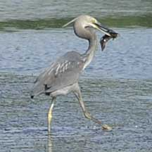

|
|
| fishes text index | photo index |
| Phylum Chordata > Subphylum Vertebrata > fishes |
| Eeltail
catfishes Family Plotosidae updated Sep 2020
Where seen? These squirmy fishes that resemble eels are the only catfishes commonly seen in coral reefs and intertidal areas. They are sometimes abundant on many of our shores. Juveniles about 10cm long or smaller can be seen close to mid-water mark, while larger ones are often sighted hiding among seagrass or coral rubble in deeper waters. What are eeltail catfishes? Eeltail catfishes belong to the Family Plotosidae. According to FishBase: the family has 9 genera and 32 species. The marine species are found in the Indo-West Pacific Ocean. Most of the members of this family live in freshwater. Only a few are marine. 'Plotos' means 'to float' in Greek. Features: Juveniles from 5cm, adults to about 30cm. The body is long and cylindrical, flattening into an eel-like tail, i.e., the dorsal and anal fins are continuous with the tail fin. To swim, the fish undulates in an eel- or snake-like manner. Snout blunt with four pairs of 'whiskers' (called barbels) all around the mouth. One pair on the snout in front of the eyes, one pair on each side of the mouth and two pairs below the mouth. It lack scales and has a smooth slimy skin. It makes up for this 'nakedness' with venomous spines on the dorsal fin and on each of the pectoral fins. These tough spines can be locked upright, thus making an eeltail catfish unpleasant for bigger fish to swallow. They use their venomous spines to protect themselves against predators, and not to catch prey. Sometimes mistaken for sea catfishes. Sea catfishes are seldom encountered on the intertidal at low tide. Sea catfishes have barbels too but their tail fins are forked and not eel-like as in the eeltail catfishes. Eeltail catfishes are sometimes also mistaken for sea snakes or eels (Family Muraenidae). Here's more on how to tell apart sea snakes, eels and eel-like animals. |
 'Whiskers' help it to find food in murky waters. Changi, Aug 05 |
 Small ones may swim in tight groups. Kusu Island, Jun 04 |
 Great billed heron caught an eeltail catfish! Chek Jawa, Jan 10 |
|
| What do they eat? Small ones eat
tiny animals and algae. Adult eel-tail catfishes are adapted for hunting
on the sea bottom in murky waters. Prey include crustaceans, molluscs,
worms and sometimes fishes. The 'whiskers' (barbels) around the mouth
do not sting, they help find prey where visibility is poor. The barbels have taste buds
to help sense food. They
also have a keen sense of hearing. Also a strong sense of smell, using their 'noses' (nostril-like openings
on the snout). Human uses: The Black eeltail catfish is fished for food and sport in some places. Striped eeltail catfishes are popular in the aquarium trade although they eat their tankmates, and even one another, as they get bigger. These are harvested from the wild. |
| Some Eeltail catfishes on Singapore shores |

|
 |
|
| 'Whiskers' (barbels) at the top of the snout do not extend past the eyes. | 'Whiskers' (barbels) at the top of the snout can extend past the eyes. | |
 |
|
| Family
Plotosidae recorded for Singapore from Wee Y.C. and Peter K. L. Ng. 1994. A First Look at Biodiversity in Singapore. **from WORMS
|
Links
References
|